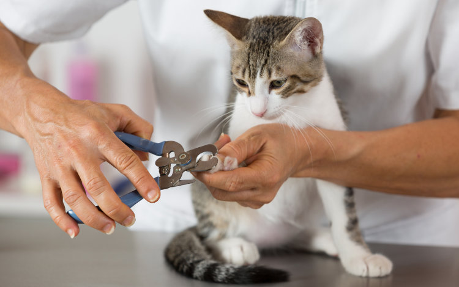
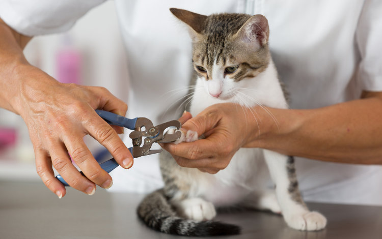

About Us
The Fashion Pet is Missoula's oldest and highest-rated pet salon. We have services to suit every pet's need. And if your pet needs something that's not listed on our services menu, just let us know and we'll make it happen! Thank you for trusting your pet to The Fashion Pet.
 

About the Developer
Todd has developed web pages and web-based applications for some of Missoula's best-known local shops. If you'd like him to help you find innovative ways to drive sales and increase your online presence, contact him at todd@toddmickel.com.